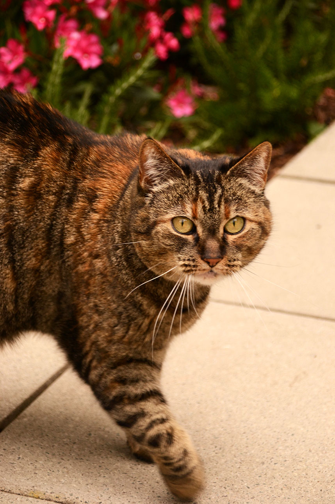

|
 | |
|
||
| Stiles | Lydia |
| Familie Hayes heeft 2 katten. Voor Emily’s tiende verjaardag is ze samen met haar vader, twee katten gaan kopen. Voor een aantal jaar luisterden deze katten naar de namen ‘Snoesje’ en ‘Loesje’. In 2014 werden ze omgedoopt naar ‘Stiles’ en ‘Lydia’ uit de befaamde horror-teen serie ‘Teen Wolf’. | ||
| De adoptie van Stiles en Lydia is ook een eerbetoon aan Emily's moeder, wie zei dat ze kittens wou adopteren met haar dochtertje. |